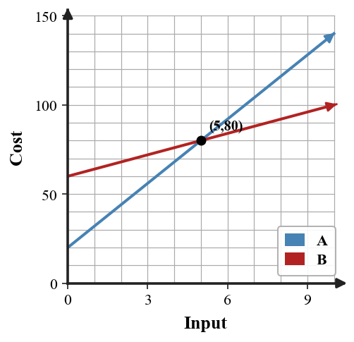
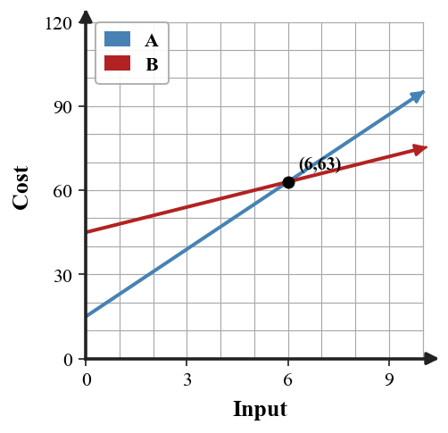

Writing and Solving Systems from Situations
Mathematical idea: A system model uses two constraints to find values that make a situation work.
Today you will practice the representations named in the learning target. You will connect skills from examples to an exit ticket that checks both procedures and meaning.
Learning Target
Learning Target: Students will create and solve systems that model real-world situations.
I can statements
- I can build a system of equations that represents two constraints in a situation.
- I can predict the meaning of a solution before solving from the context and variables.
- I can design a solution pathway that connects equations, calculations, and a contextual conclusion.
What's To Come
This is a long-range preview for future lessons. Do not solve it today. Instead, annotate it individually. Circle anything familiar, underline symbols or directions that seem important, and write notes about what information you think will be needed later.
As you annotate, ask yourself: What parts (words, symbols, graphs) do you KNOW? What parts look FAMILIAR? What parts look like jibberish?
A club is choosing between two bus companies. Company A charges \$180 plus \$6 per student. Company B charges \$90 plus \$9 per student. A draft graph labels the intersection as $(30,270)$ but the written conclusion says “Company A is always cheaper.”
- Revise the written conclusion so it matches the model.
- Explain what each coordinate of the intersection means.
- State which company is cheaper for 20 students and for 40 students.
Teacher note: This is only an annotation preview. Do not solve the future task; ask students to circle familiar representations and underline constraints.
Intro
Directions
Read the introduction aloud with a partner or in a small group. As you read, annotate the text by highlighting important ideas, circling key vocabulary, and writing short notes about connections, questions, or predictions in the margins.
A word problem has quantities that must be named before equations can be written. Variable definitions tell what each letter represents and what unit it uses. Clear variables help the equations match the situation instead of just matching numbers.
A system from a situation usually has two constraints, such as a total number and a total cost. The solution is the ordered pair that makes both constraints true. Each coordinate should be explained in words, not left as just $x$ and $y$.
Before solving, the context can tell you what kind of answer is reasonable. For example, ticket counts should not be negative or fractional in most school-event problems. This prediction helps you notice when an algebra result does not fit the situation.
Useful representations include verbal descriptions, variable definitions, systems of equations, tables or graphs for checking, and contextual conclusions. Each representation should tell the same story about the two constraints.
Modeling often involves tickets, costs, mixtures, or comparisons between plans. The goal is to connect equations, calculations, and a conclusion that answers the original question.
Teacher note: Listen for annotations that connect vocabulary to representations. Follow-up: Which representation would you want to see first?
Stop and Discuss
- Why should variables be defined before writing a system?
- What does the solution of a contextual system usually mean?
- Why can it help to predict the meaning of a solution before solving?
Intro answers: 1. Variables define what each letter means and what units are being counted. 2. The solution is the pair of values that satisfies both constraints and answers the situation. 3. A prediction gives a reasonableness check before and after the algebra.
A system from a situation starts with variable definitions and two constraints that must both be true.
For ticket sales, let $a$ be adult tickets and $s$ be student tickets.
$$\begin{aligned}a+s&=80\\10a+6s&=640\end{aligned}$$Context: The first equation counts tickets, and the second equation counts dollars.
Example 1: Read a Total Equation
At a robotics showcase, let $r$ be robot demos and $c$ be coding demos.
$$r+c=54$$- Explain what the equation represents in the situation.
- Name one possible pair that satisfies the equation.
- Explain why the equation alone is not enough to determine one exact answer.
Example 1 answer: It represents 54 total demos. Example pair: $(20,34)$. One equation with two unknowns has many possible pairs unless another constraint is given.
Teacher reminder: Ask students to name the representation they used before they describe the procedure.
You Try It 1: Read a Total Equation
For a supply order, let $c$ be calculators and $b$ be batteries.
$$c+b=42$$- Explain what the equation represents.
- Name one possible pair that satisfies it.
- Explain what additional information would be needed for one exact answer.
You Try It 1 answer: It represents 42 total items. Example pair: $(10,32)$. A second constraint, such as total cost, would be needed for one exact answer.
Teacher reminder: Have students compare their setup with a partner before simplifying.
Stop and Discuss
- Why does a total equation usually need another constraint?
Stop and Discuss 1 possible response: One total equation has many possible pairs, so another constraint is needed for one exact solution.
Follow-up: What evidence would convince someone who disagrees?
A table can organize the quantities before the equations are written.
| Quantity | Adult tickets | Student tickets | Total |
|---|---|---|---|
| Number | $a$ | $s$ | 80 |
| Dollars | $10a$ | $6s$ | 640 |
The same variables appear in both constraints, so the solution must satisfy both rows of the table.
Example 2: Write and Solve a Ticket System
Adult tickets cost 10 dollars and student tickets cost 6 dollars. A group sells 80 tickets for 640 dollars. Let $a$ be adult tickets and $s$ be student tickets.
- Write a system for the ticket count and money total.
- Solve the system.
- Interpret both coordinates of the solution.
Example 2 answer: $a+s=80$ and $10a+6s=640$. Substitute $s=80-a$: $10a+480-6a=640$, $4a=160$, so $a=40$, $s=40$. They sold 40 adult and 40 student tickets.
Teacher reminder: Ask students to name the representation they used before they describe the procedure.
You Try It 2: Write and Solve a Ticket System
Adult tickets cost 12 dollars and student tickets cost 7 dollars. A group sells 70 tickets for 590 dollars. Let $a$ be adult tickets and $s$ be student tickets.
- Write a system for the ticket count and money total.
- Solve the system.
- Interpret the solution in context.
You Try It 2 answer: $a+s=70$ and $12a+7s=590$. With $s=70-a$, $12a+490-7a=590$, so $5a=100$, $a=20$, $s=50$. They sold 20 adult and 50 student tickets.
Teacher reminder: Have students compare their setup with a partner before simplifying.
Stop and Discuss
- How did the two equations represent two different parts of the ticket situation?
Stop and Discuss 2 possible response: One equation counted tickets/items; the other counted money or cost.
Follow-up: What evidence would convince someone who disagrees?
When two plans are equal, set their cost expressions equal and solve for the input.
$$4+2.5m=16+1.5m$$| Miles | Plan A $4+2.5m$ | Plan B $16+1.5m$ |
|---|---|---|
| 12 | 34 | 34 |

Context: At 12 miles, both taxi plans cost 34 dollars.
Example 3: Find a Break-Even Distance
Taxi A charges 4 dollars plus 2.50 dollars per mile. Taxi B charges 16 dollars plus 1.50 dollars per mile.
- Write an equation for when the costs are equal.
- Solve for the number of miles and the shared cost.
- Explain what the break-even point means.
Example 3 answer: $4+2.5m=16+1.5m$, so $m=12$. Cost is 34 dollars. The taxis cost the same for a 12-mile ride.
Teacher reminder: Ask students to name the representation they used before they describe the procedure.
You Try It 3: Find a Break-Even Distance
Service A charges 8 dollars plus 3 dollars per mile. Service B charges 20 dollars plus 1.50 dollars per mile.
- Write an equation for equal costs.
- Solve for the miles and shared cost.
- Explain the meaning of the break-even point.
You Try It 3 answer: $8+3m=20+1.5m$, so $1.5m=12$ and $m=8$. Shared cost is 32 dollars. Both services cost 32 dollars at 8 miles.
Teacher reminder: Have students compare their setup with a partner before simplifying.
Stop and Discuss
- What does the break-even input mean in both taxi problems?
Stop and Discuss 3 possible response: It is the input where both plans have the same cost, so neither plan is cheaper at that point.
Follow-up: What evidence would convince someone who disagrees?
A context graph can show two linear plans and the input where their outputs match.

The intersection tells both the input value and the output value in the situation. A written conclusion should explain both coordinates using the units on the axes.
Example 4: Connect a Context Graph to Equations
The graph shows two linear plans for a field trip.

- Write an equation for each plan using the graph.
- Identify the intersection and explain both coordinates.
- State which plan is cheaper before and after the intersection.
Example 4 answer: Plan A: $y=20+12x$. Plan B: $y=60+4x$. Intersection $(5,80)$ means both cost 80 dollars for 5 students/groups/units. Plan A is cheaper before 5; Plan B is cheaper after 5.
Teacher reminder: Ask students to name the representation they used before they describe the procedure.
You Try It 4: Connect a Context Graph to Equations
The graph shows two membership plans.

- Write an equation for each plan using the graph.
- Identify the intersection and explain both coordinates.
- State which plan is cheaper before and after the intersection.
You Try It 4 answer: Plan A: $y=15+8x$. Plan B: $y=45+3x$. Intersection $(6,63)$ means both cost 63 dollars when $x=6$. Plan A is cheaper before 6; Plan B is cheaper after 6.
Teacher reminder: Have students compare their setup with a partner before simplifying.
Stop and Discuss
- How did the graph help you write or check the equations?
Stop and Discuss 4 possible response: The graph shows rates, starting values, and the intersection that should match the equations.
Follow-up: What evidence would convince someone who disagrees?
Summary
Today you turned real situations into systems of equations and used the solution to answer a question.
Variable definitions, equations, tables, and graphs should all represent the same two constraints.
A common error is matching a number to the wrong variable or leaving the solution without context.
Strong understanding means you can build the model, solve it, and explain both coordinates in the original situation.
Common Mistakes
- Undefined variables. Why it is tempting: letters seem obvious while reading. What to check instead: write what each variable counts and its unit.
- Swapping coefficients. Why it is tempting: numbers in the story can appear close together. What to check instead: match each rate or cost to the correct variable.
- Leaving the answer as an ordered pair only. Why it is tempting: the algebra is complete. What to check instead: write a sentence using the context.
- Ignoring reasonableness. Why it is tempting: solving steps may produce a number. What to check instead: check whether values can be negative, fractional, or too large.
- Using one constraint twice. Why it is tempting: two equations can look different but say the same thing. What to check instead: make sure each equation represents a different condition.
Optional Future Task Reflection
Look back at the future task. Do not solve it yet. Highlight one part that makes more sense now than it did at the beginning. Circle one part that still feels unfamiliar. Write one sentence about what representation you would look at first.
In a ticket context, if $s$ is student tickets and $a$ is adult tickets, what does $s+a=120$ represent?
Adult tickets cost \$12 and student tickets cost \$8. A group sells 95 tickets for \$920. Let $a$ be adult tickets and $s$ be student tickets. Write and solve a system for $a$ and $s$.
What is one idea about writing and solving systems from situations you understand better now than at the start of class? Write at least one complete sentence.
What is one thing about writing and solving systems from situations you still want to understand or practice? Be specific — name the idea, not just "everything."